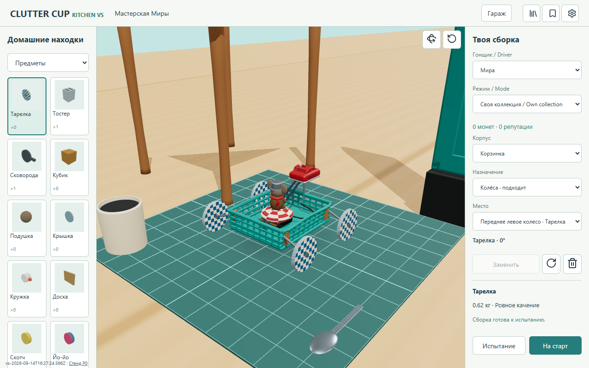
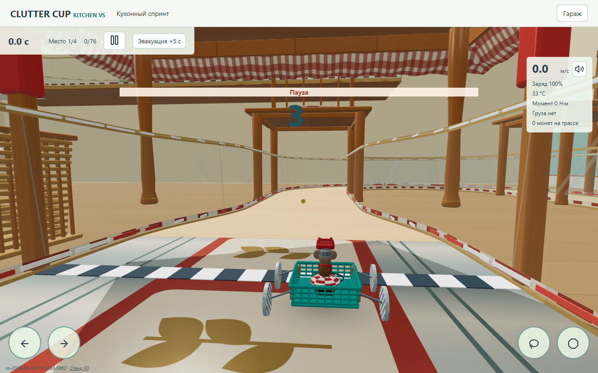
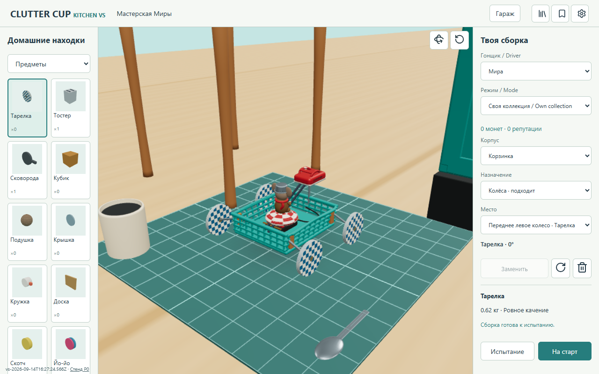
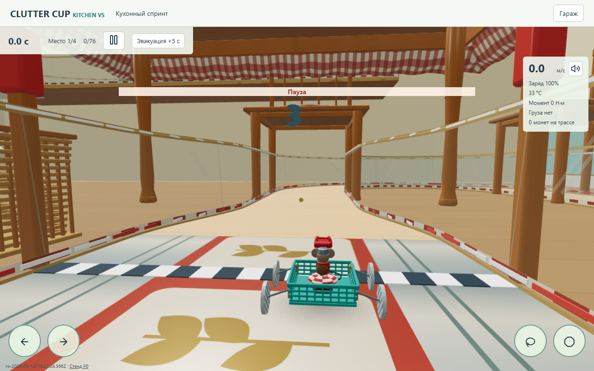
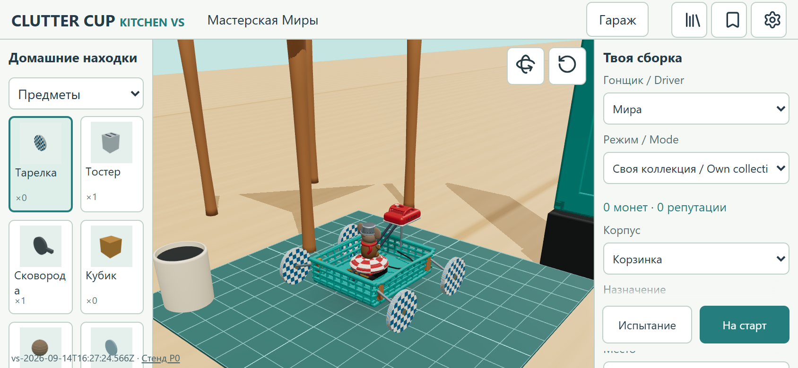
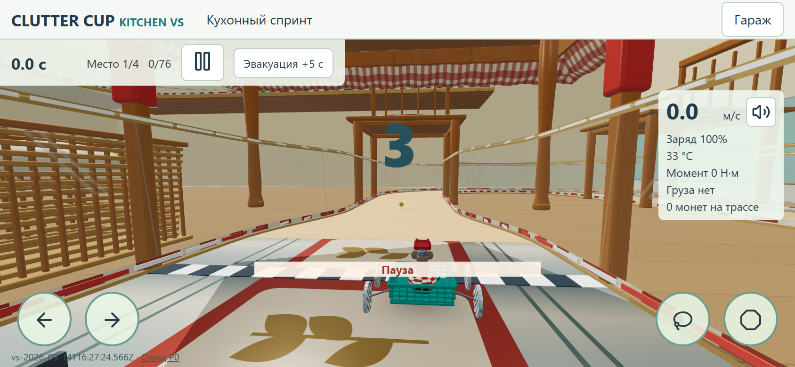
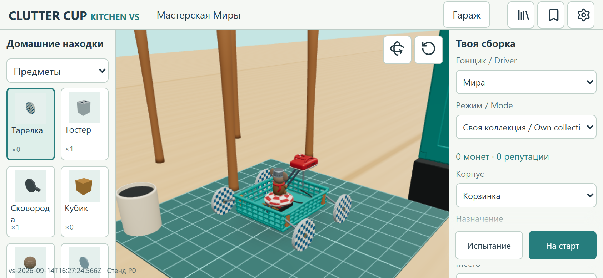
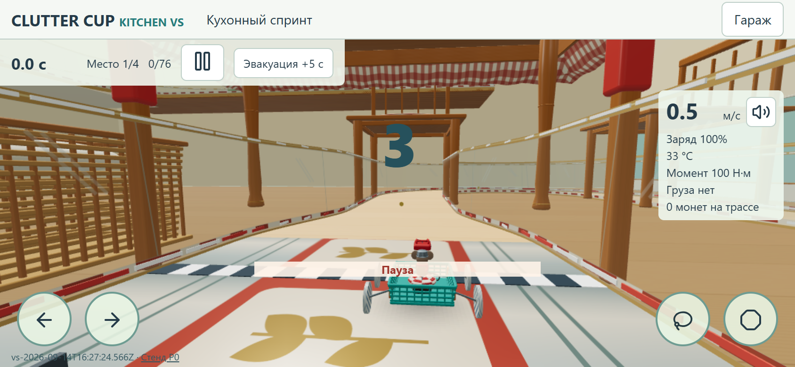

Тестовые материалы, не финальное оформление. Мобильные кадры сняты в Chromium-эмуляции, не на телефоне. Одинаковые гараж и старт; физика не изменена.
| Режим | Canvas / CSS | Кадр p50/p95, мс | CPU p50, мс | Draw calls |
|---|---|---|---|---|
| desktop-standard | 1280x742 / 1280x742 | 33.3 / 38.6 | 4.9 | 107 |
| desktop-light | 1088x630 / 1280x742 | 33.4 / 35.7 | 1.6 | 107 |
| mobile-standard | 1688x696 / 844x348 | 33.7 / 37.9 | 4.7 | 110 |
| mobile-light | 1076x443 / 844x348 | 33.4 / 35.3 | 2.0 | 110 |
CPU здесь означает отправку команд рендера, не время исполнения GPU. Light сохраняет контактные тени, форму и игровые сигналы.







